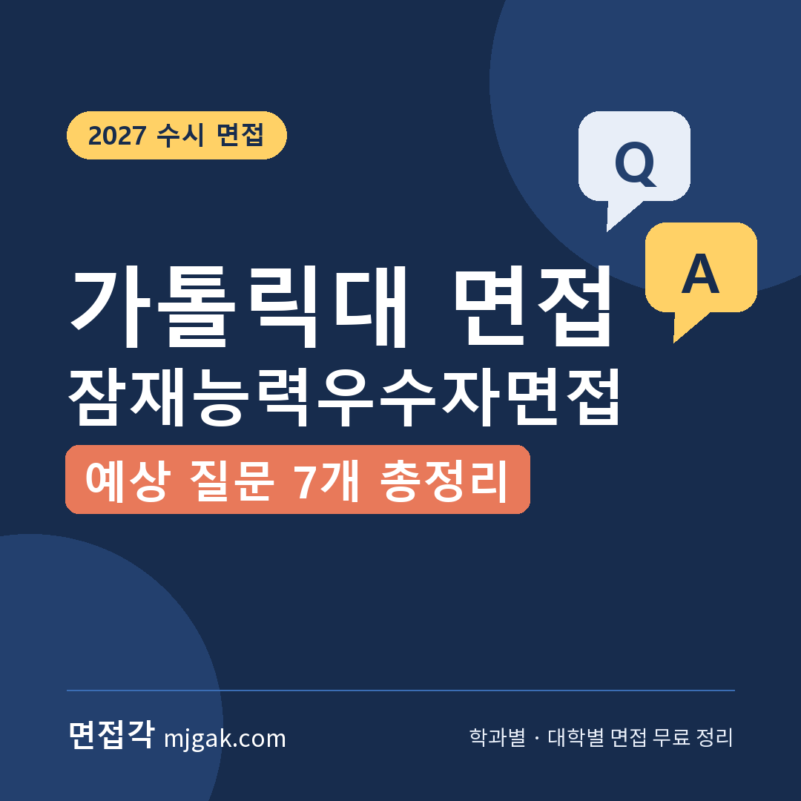
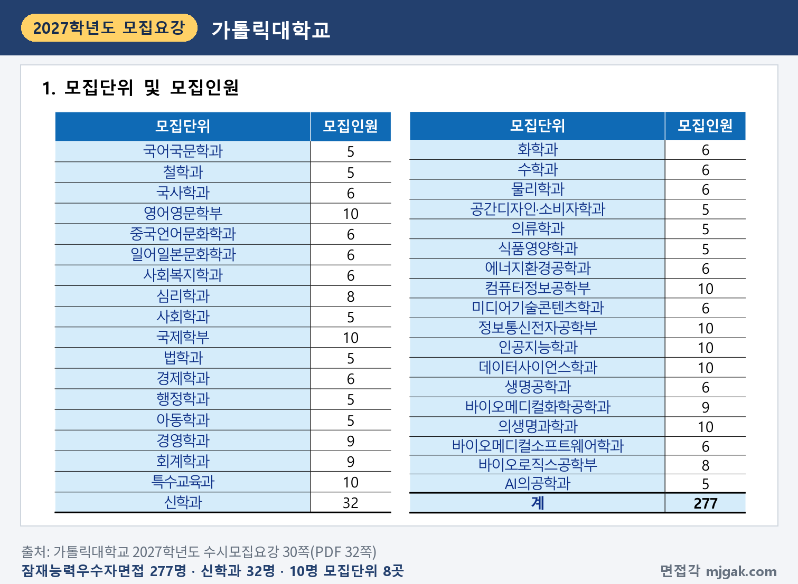
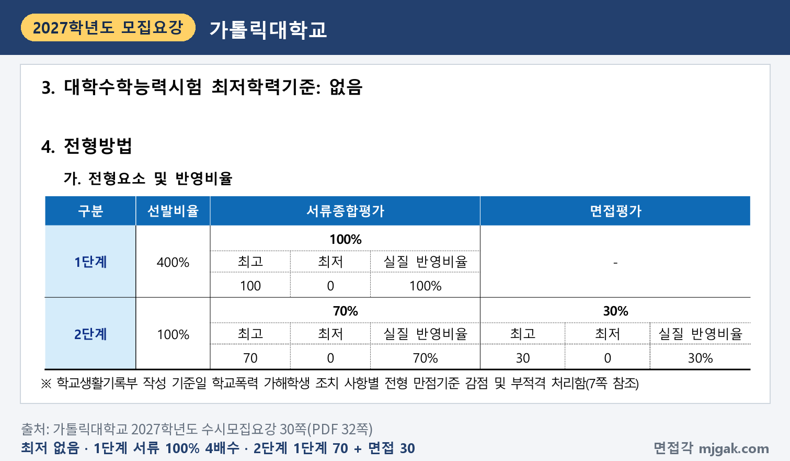
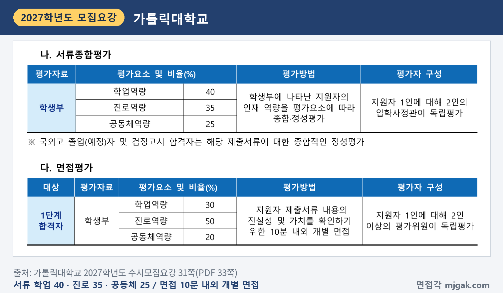
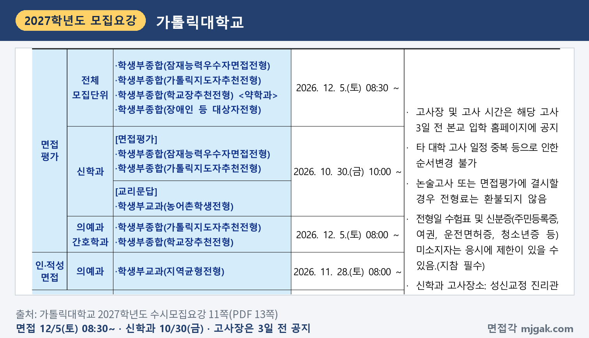
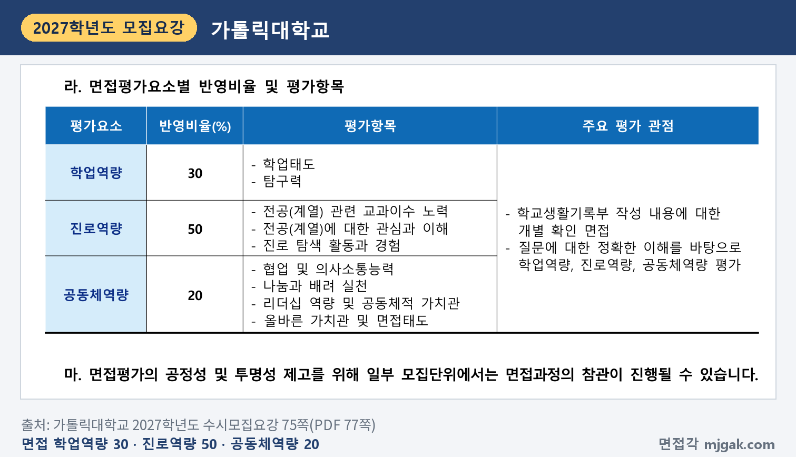
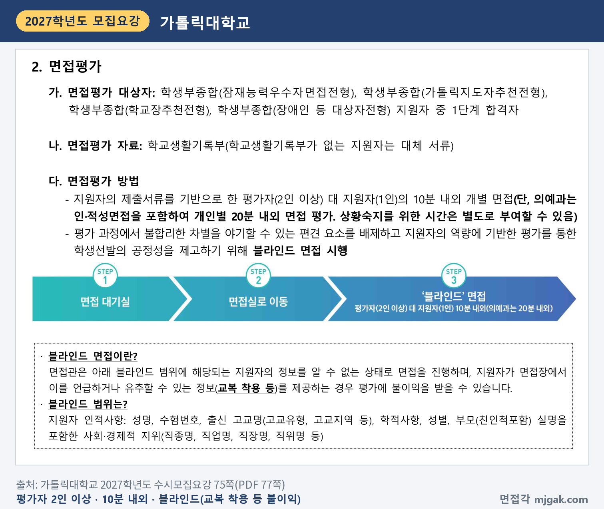
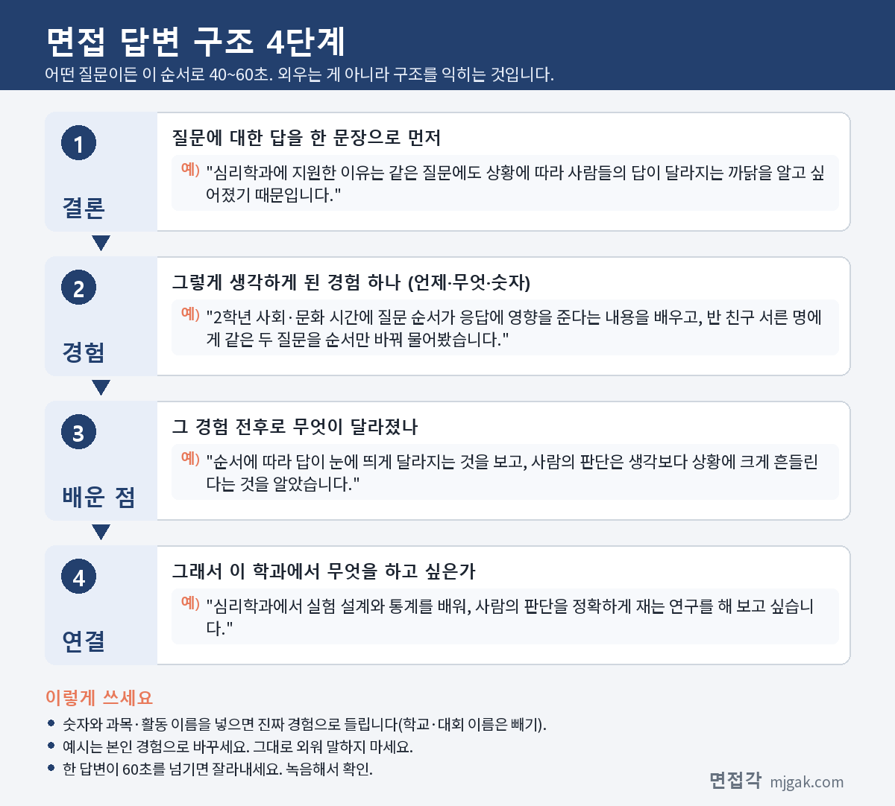
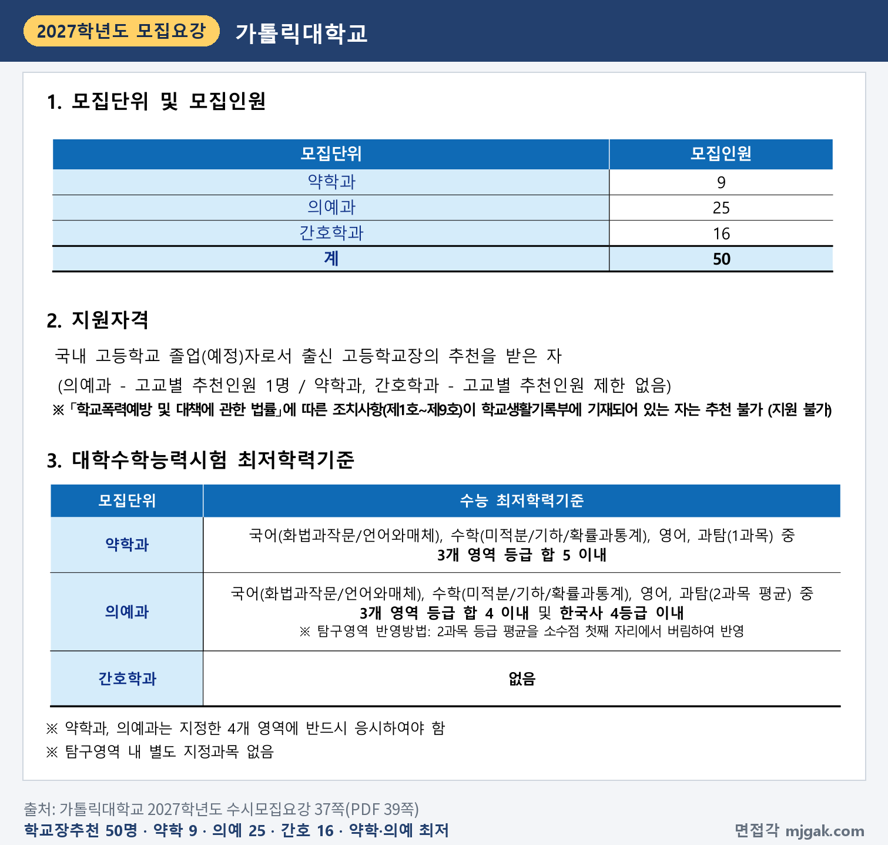

Ctrl+V (서식 유지됨)제목
본문 (이 영역 전체가 복사됩니다)
📷 여기에 이미지 넣기 — 썸네일 — thumb-cuk.png (대표 이미지로 지정)
가톨릭대 잠재능력우수자면접전형에서 먼저 챙길 것은 수능 뒤 일정입니다. 수능은 11월 19일(목), 1단계 합격자 발표는 11월 27일(금) 16:00, 면접은 12월 5일(토) 08:30부터입니다. 2단계는 1단계 성적 70%와 면접평가 30%를 합산하고, 면접은 평가자 2인 이상이 지원자 1명을 10분 내외로 보는 블라인드 개별 면접입니다. 면접 평가의 50%가 진로역량이고, 수능최저학력기준은 없습니다. 가톨릭대학교 2027학년도 수시모집요강으로 이 전형 지원자가 알아야 할 전형 방법, 일정, 면접 방식, 예상 질문 7개, 준비 순서를 정리했습니다.
1. 잠재능력우수자면접전형, 2027학년도에는 어떻게 보나
잠재능력우수자면접전형은 학생부종합전형으로 277명을 뽑습니다. 2026학년도 250명에서 27명 늘었습니다(1쪽). 36개 모집단위 가운데 신학과가 32명으로 가장 많고, 영어영문학부·국제학부·특수교육과·컴퓨터정보공학부·정보통신전자공학부·인공지능학과·데이터사이언스학과·의생명과학과가 각 10명, 경영학과·회계학과·바이오메디컬화학공학과가 각 9명, 심리학과·바이오로직스공학부가 각 8명입니다. 나머지는 5~6명입니다(30쪽). 의예과·약학과·간호학과는 이 전형에서 뽑지 않고, 신학과는 지원자격에 추천 조건이 더 있습니다(30쪽).
📷 여기에 이미지 넣기 — 캡처 1 — 가톨릭대학교 2027학년도 수시모집요강 30쪽(PDF 32쪽): cuk-2027-units.png
전형 방법은 1단계에서 서류종합평가 100%로 모집인원의 4배수를 뽑고, 2단계에서 1단계 성적 70%와 면접평가 30%를 합산해 총점 순으로 뽑습니다. 1단계 합격선의 동점자는 모두 1단계 합격자로 뽑습니다(30·32쪽). 모집인원에 4를 곱해 이 글에서 계산하면, 10명을 뽑는 모집단위는 40명, 5명을 뽑는 모집단위는 20명이 1단계 합격 규모입니다. 수능최저학력기준은 없습니다(30쪽).
📷 여기에 이미지 넣기 — 캡처 2 — 가톨릭대학교 2027학년도 수시모집요강 30쪽(PDF 32쪽): cuk-2027-method.png
2단계 동점자는 면접평가의 진로역량, 학업역량, 공동체역량 점수 순으로 먼저 가립니다(32쪽). 학교폭력 조치사항은 조치별로 1단계 만점기준에서 감점하거나 부적격 처리합니다(7쪽).
서류종합평가는 학교생활기록부로 학업역량 40%, 진로역량 35%, 공동체역량 25%를 정성평가하고, 지원자 1명을 입학사정관 2명이 독립평가합니다(31쪽). 이 비율은 2027학년도에 바뀌었습니다(1쪽).
📷 여기에 이미지 넣기 — 캡처 3 — 가톨릭대학교 2027학년도 수시모집요강 31쪽(PDF 33쪽): cuk-2027-eval.png
2. 언제 보나: 11월 27일(금) 1단계 발표, 12월 5일(토) 면접
일정은 날짜순으로 이렇습니다(11·12쪽).
- 11월 19일(목): 수능
- 11월 27일(금) 16:00: 1단계 합격자 발표
- 12월 2일(수): 고사장·고사 시간 공지(고사 3일 전, 이 글에서 계산한 날짜)
- 12월 5일(토) 08:30~: 면접
- 12월 18일(금) 16:00: 최초 합격자 발표
합격 여부는 개별 통보하지 않으니 입학 홈페이지(ipsi.catholic.ac.kr)에서 직접 확인합니다(16쪽). 1단계 발표에서 면접까지는 8일입니다(이 글에서 계산한 값).
신학과는 1단계 발표가 10월 23일(금) 16:00, 면접이 10월 30일(금) 10:00부터 성신교정 진리관으로 일정이 다릅니다(11·12쪽).
📷 여기에 이미지 넣기 — 캡처 4 — 가톨릭대학교 2027학년도 수시모집요강 11쪽(PDF 13쪽): cuk-2027-schedule.png
3. 면접은 어떻게 보나
면접은 지원자의 제출서류를 기반으로 평가자 2인 이상이 지원자 1명을 10분 내외로 보는 개별 면접이고, 평가위원이 각자 독립평가합니다. 면접평가 자료는 학교생활기록부입니다(31·75쪽). 모집요강은 이 면접의 목적을 "제출서류 내용의 진실성 및 가치를 확인"하는 것으로 적었습니다(31쪽). 일부 모집단위는 면접 과정을 참관할 수 있습니다(75쪽).
평가 요소와 반영비율은 다음과 같습니다(75쪽).
- 학업역량 30%: 학업태도, 탐구력
- 진로역량 50%: 전공(계열) 관련 교과이수 노력, 전공(계열)에 대한 관심과 이해, 진로 탐색 활동과 경험
- 공동체역량 20%: 협업 및 의사소통능력, 나눔과 배려 실천, 리더십 역량 및 공동체적 가치관, 올바른 가치관 및 면접태도
주요 평가 관점은 "학교생활기록부 작성 내용에 대한 개별 확인 면접"과, 질문에 대한 정확한 이해를 바탕으로 세 역량을 평가하는 것입니다(75쪽).
📷 여기에 이미지 넣기 — 캡처 5 — 가톨릭대학교 2027학년도 수시모집요강 75쪽(PDF 77쪽): cuk-2027-interview.png
블라인드 범위는 성명, 수험번호, 출신 고교명(고교유형, 고교지역 등), 학적사항, 성별, 부모(친인척 포함)의 실명과 직업·직장 같은 사회·경제적 지위입니다. 면접장에서 이를 언급하거나 유추할 수 있는 정보(교복 착용 등)를 제공하면 평가에 불이익을 받을 수 있습니다(75쪽).
📷 여기에 이미지 넣기 — 캡처 6 — 가톨릭대학교 2027학년도 수시모집요강 75쪽(PDF 77쪽): cuk-2027-blind.png
4. 평가 기준에서 나올 예상 질문 7개와 답변법
가톨릭대는 모집요강에 면접 질문 예시를 공개하지 않았습니다. 아래 7개는 위 평가 항목과 평가 관점으로 정리한 예상 질문입니다. "○○" 자리에는 내 학생부의 과목과 활동이 들어갑니다. 예시 답변은 모집단위를 바꿔 가며 쓴 가상의 예시이니 반드시 본인 경험으로 바꾸세요.
▶ 질문 1. ○○학과에 지원한 동기를 학생부 활동과 연결해 말해 보세요. (진로역량: 전공(계열)에 대한 관심과 이해)
왜 묻나: 면접 평가의 50%인 진로역량에 "전공(계열)에 대한 관심과 이해"가 들어 있습니다.
답변 구조: 지원 이유 한 문장 → 관심을 확인한 학생부 장면 → 그때 알게 된 것 → 학과에서 배울 것.
답변 예시 (심리학과):
"심리학과에 지원한 이유는 같은 질문에도 상황에 따라 사람들의 답이 달라지는 까닭을 알고 싶어졌기 때문입니다. 2학년 사회·문화 시간에 질문 순서가 응답에 영향을 준다는 내용을 배우고, 반 친구 서른 명에게 같은 두 질문을 순서만 바꿔 물어봤습니다. 순서에 따라 답이 눈에 띄게 달라지는 것을 보고, 사람의 판단은 생각보다 상황에 크게 흔들린다는 것을 알았습니다. 심리학과에서 실험 설계와 통계를 배워, 사람의 판단을 정확하게 재는 연구를 해 보고 싶습니다."
주의: "사람에게 관심이 많아서"로 끝내지 말고, 그 관심을 확인한 장면 하나를 붙이세요.
▶ 질문 2. ○○학과와 관련해 어떤 과목을 골라 들었고, 그 과목에서 무엇을 배웠나요? (진로역량: 전공(계열) 관련 교과이수 노력)
왜 묻나: 진로역량의 첫 평가항목이 "전공(계열) 관련 교과이수 노력"입니다.
답변 구조: 고른 과목과 이유 → 학과와 이어진 배움 하나 → 직접 해 본 것 → 학과 공부와 연결.
답변 예시 (데이터사이언스학과):
"데이터사이언스학과 공부의 기초가 통계와 프로그래밍이라고 생각해 2학년 때 확률과 통계와 정보를 함께 골랐습니다. 확률과 통계에서 표본이 작으면 결과가 흔들린다는 것을 배운 뒤, 정보 시간에 배운 파이썬으로 주사위를 10번, 100번, 1,000번 던지는 시뮬레이션을 만들어 비교했습니다. 던지는 횟수가 늘수록 각 눈이 나오는 비율이 6분의 1에 가까워지는 것을 직접 확인했습니다. 데이터사이언스학과에서 데이터가 얼마나 있어야 결과를 믿을 수 있는지 판단하는 방법을 배우고 싶습니다."
주의: 과목 이름만 나열하지 말고, 고른 이유와 배운 내용 하나를 함께 말하세요.
▶ 질문 3. 학생부에 적힌 ○○ 탐구에서 본인이 직접 한 일과 결과를 설명해 보세요. (학업역량: 탐구력 / 평가 관점: 학교생활기록부 작성 내용에 대한 개별 확인)
왜 묻나: 모집요강이 밝힌 주요 평가 관점이 "학교생활기록부 작성 내용에 대한 개별 확인 면접"이고, 학업역량에 "탐구력"이 있습니다.
답변 구조: 탐구 주제와 내 역할 → 막혔던 점 → 바꾼 방법과 결과 → 배운 점과 학과 연결.
답변 예시 (의생명과학과):
"2학년 생명과학 탐구에서 모둠이 손 세정제 종류에 따른 세균 감소를 조사했고, 저는 배지에 손가락을 찍어 세균을 키우는 실험 설계를 맡았습니다. 처음에는 찍는 시간이 사람마다 달라 비교가 안 됐습니다. 그래서 타이머로 5초씩 찍기로 정하고 세 번 반복했더니, 알코올 세정제를 쓴 경우 세균 집락이 가장 적었습니다. 조건을 맞추지 않으면 결과를 믿을 수 없다는 것을 배웠고, 의생명과학과에서 실험 설계를 더 정확하게 배우고 싶습니다."
주의: "저희 모둠은"으로 시작하면 내 역할이 흐려집니다. "저는 ○○을 맡았습니다"로 시작하고, 학생부에 없는 내용을 부풀리지 마세요.
📷 여기에 이미지 넣기 — 이미지 1 — 제미나이 생성: 겨울 햇살이 드는 캠퍼스 도서관 라운지에서 뇌 모형·주사위와 노트북·페트리 접시와 피펫·영어 소설책·동전과 계산기·화이트보드와 색 마커 옆에서 답하는 여학생(실사), 가톨릭대 상징색 블루·화이트 / "제미나이 프롬프트 1"
(AI로 만든 이미지로, 실제 캠퍼스와 다를 수 있습니다)
▶ 질문 4. 고등학교에서 가장 어려웠던 과목은 무엇이고, 어떻게 공부했나요? (학업역량: 학업태도)
왜 묻나: 학업역량의 평가항목에 "학업태도"가 있습니다.
답변 구조: 어려웠던 과목과 이유 → 처음의 결과 → 바꾼 공부 방법 → 달라진 점과 학과 연결.
답변 예시 (영어영문학부):
"가장 어려웠던 과목은 1학년 영어였습니다. 긴 지문을 끝까지 읽어도 내용이 머리에 남지 않아 1학기 성적이 기대보다 낮았습니다. 2학기에는 문단마다 한 줄씩 우리말로 요약하고, 그날 지문을 소리 내어 두 번 읽었습니다. 학기 말에는 긴 지문도 흐름을 먼저 잡을 수 있게 됐고, 영어영문학부에서 영미 소설을 원문으로 깊이 읽어 보고 싶습니다."
주의: 성적 숫자를 늘어놓기보다 바꾼 공부 방법을 구체적으로 말하세요.
▶ 질문 5. 진로를 정하는 데 가장 영향을 준 활동은 무엇인가요? (진로역량: 진로 탐색 활동과 경험)
왜 묻나: 진로역량의 세 번째 평가항목이 "진로 탐색 활동과 경험"입니다.
답변 구조: 활동 한 문장 → 그 활동에서 생긴 문제 → 내가 한 일과 결과 → 진로가 정해진 이유.
답변 예시 (회계학과):
"진로를 정하는 데 가장 영향을 준 활동은 2학년 학생회에서 축제 예산을 정리한 일입니다. 반별로 낸 영수증을 모아 보니 돈이 어디에 쓰였는지 한눈에 보이지 않았습니다. 그래서 지출을 항목별로 나눈 표를 만들어 학생회 게시판에 공개했고, 다음 행사부터는 반별로 예산 계획을 미리 내기로 정했습니다. 숫자를 정리하면 결정이 쉬워진다는 것을 알게 돼, 회계학과에서 재무 정보를 읽고 만드는 법을 배우고 싶습니다."
주의: 활동을 여러 개 나열하지 말고 하나를 깊게 말하세요.
▶ 질문 6. 모둠이나 동아리에서 의견이 엇갈렸을 때 본인은 어떤 역할을 했나요? (공동체역량: 협업 및 의사소통능력, 리더십 역량 및 공동체적 가치관)
왜 묻나: 공동체역량의 평가항목에 "협업 및 의사소통능력"과 "리더십 역량 및 공동체적 가치관"이 있습니다.
답변 구조: 상황과 엇갈린 의견 → 내가 제안한 것 → 정한 방법과 결과 → 배운 점.
답변 예시 (사회복지학과):
"봉사 동아리에서 복지관 행사를 준비할 때 공연을 하자는 의견과 생활 교실을 열자는 의견이 갈렸습니다. 저는 정하기 전에 복지관 선생님께 어르신들이 요즘 무엇을 어려워하시는지 여쭤보자고 제안했습니다. 키오스크 주문을 어려워하신다는 답을 듣고, 두 의견을 합쳐 짧은 공연 뒤에 종이로 만든 키오스크 화면으로 주문을 연습하는 시간을 열었습니다. 도움받는 사람의 필요를 먼저 확인해야 한다는 것을 배웠고, 사회복지학과에서 욕구 조사 방법을 배우고 싶습니다."
주의: 내가 이끈 이야기만 하지 말고, 다른 친구의 의견을 어떻게 받아들였는지도 넣으세요.
▶ 질문 7. 방금 "배려했다"고 했는데, 구체적으로 어떤 행동을 했나요? (공동체역량: 나눔과 배려 실천 / 평가 관점: 질문에 대한 정확한 이해)
왜 묻나: 공동체역량에 "나눔과 배려 실천"이 있고, 주요 평가 관점에 "질문에 대한 정확한 이해"가 있습니다. 앞의 답을 짚어 다시 묻는 질문이니 묻는 것(행동)에 먼저 답하세요.
답변 구조: 내가 한 행동 한 문장 → 그 행동을 하게 된 상황 → 행동 뒤의 변화 → 배운 점과 학과 연결.
답변 예시 (특수교육과):
"제가 한 행동은 모둠 토론 때 발언 요지를 화이트보드에 한 줄씩 적은 것입니다. 1학년 모둠 토론에서 몇 명이 빠르게 말을 이어 가면, 생각을 정리하는 데 시간이 걸리는 친구는 끼어들 틈이 없었습니다. 요지를 적는 역할을 자원하고 말하기 전에 손을 들어 순서를 정하자고 제안했더니, 듣기만 하던 친구도 처음으로 자기 의견을 냈습니다. 배려는 대신 해 주는 것이 아니라 함께 참여할 방법을 바꾸는 것이라고 배웠고, 특수교육과에서 이런 수업 방법을 체계적으로 배우고 싶습니다."
주의: 질문이 짚은 단어에 대한 답을 첫 문장에 두세요.
5. 답변은 이 4단계로 만드세요
어떤 질문이든 결론 → 경험 → 배운 점 → 연결 순서로 40~60초 안에 말하세요. 아래 도식은 질문 1을 4단계로 쪼갠 것입니다.
📷 여기에 이미지 넣기 — 도식 — structure-cuk.png
6. 가톨릭지도자추천·학교장추천전형도 12월 5일(토) 면접
가톨릭지도자추천전형은 51명(신학과 15명, 의예과 2명, 심리학과·인공지능학과 등 17개 모집단위 각 2명)을 뽑습니다. 신학과를 뺀 모집단위는 국내 고교 졸업(예정)자로서 가톨릭 사제, 현직 수도회 장상, 출신 가톨릭계 고교장 중 한 사람의 추천을 받으면 지원할 수 있고, 지원자의 종교나 신앙과는 무관합니다. 수능 최저는 없고, 신학과는 10월 30일 면접에 교리문답(합격·불합격 자료)이 더해집니다(11·33·34쪽). 학교장추천전형은 약학과 9명, 의예과 25명, 간호학과 16명 모두 50명이고, 의예과는 고교별 추천인원이 1명입니다. 수능 최저는 약학과가 국어, 수학, 영어, 과탐(1과목) 중 3개 영역 등급 합 5 이내, 의예과가 국어, 수학, 영어, 과탐(2과목 평균) 중 3개 영역 등급 합 4 이내 및 한국사 4등급 이내이고, 간호학과는 없습니다(37쪽). 두 전형 모두 1단계 4배수, 1단계 70% + 면접 30%이고, 면접 평가 항목과 1단계 발표일(11월 27일)이 잠재능력우수자면접전형과 같습니다(12·34·37·75쪽). 다만 두 전형의 의예과는 인·적성면접을 포함해 개인별 20분 내외로 면접을 보고, 상황 숙지를 위한 시간을 따로 줄 수 있습니다(34·38쪽). 면접은 의예과·간호학과가 12월 5일(토) 08:00, 나머지 모집단위가 08:30부터입니다(11쪽). 의예과는 지역균형·가톨릭지도자추천·학교장추천전형 중 1개 전형만 지원할 수 있고(65쪽), 지역균형전형 의예과 인·적성면접은 11월 28일(토)입니다(11쪽).
📷 여기에 이미지 넣기 — 캡처 7 — 가톨릭대학교 2027학년도 수시모집요강 37쪽(PDF 39쪽): cuk-2027-principal.png
7. 10월 23일(금)부터 면접 당일까지 준비 순서
10월 23일(금) ~ 11월 18일(수): 수능 공부가 먼저이니 주말에 조금씩 합니다. 학생부를 읽고 지원 학과와 관련해 고른 과목과 그 이유를 적어 둡니다. 활동 세 개를 골라 "내가 한 일, 막힌 점, 결과"를 한 문장씩 적고 질문 1·2·4·5의 초안을 만듭니다.
11월 19일(목): 수능.
11월 20일(금) ~ 26일(목): 질문 3·7처럼 학생부를 짚어 묻는 질문을 내 활동 두세 개로 연습합니다. 10분을 재며 모의 면접을 한 번 녹음합니다.
11월 27일(금) 16:00, 1단계 발표: 입학 홈페이지에서 합격 여부를 직접 확인합니다(16쪽).
11월 28일(토) ~ 12월 1일(화): 녹음에서 이름·학교 이름·부모 직업이 나오는 답, 60초를 넘는 답을 고칩니다.
12월 2일(수) ~ 4일(금): 고사 3일 전 공지되는 고사장과 고사 시간을 확인하고(11쪽), 사진이 함께 출력된 수험표를 뽑아 둡니다(66쪽). 새 답변은 만들지 않습니다.
12월 5일(토), 면접: 수험표와 신분증을 챙깁니다. 모바일 신분증(운전면허증)은 인정하지 않고, 전자·통신 기기를 지닌 채 응시하면 부정행위로 봅니다. 입실 완료 시간을 넘기면 응시할 수 없고 불합격 처리합니다(66쪽). 교복은 입지 않습니다(75쪽).
12월 18일(금) 16:00: 최초 합격자 발표. 합격했다면 12월 21일(월) ~ 23일(수) 16:00 문서 등록을 놓치지 마세요(12쪽).
8. 가톨릭대 잠재능력우수자면접 자주 묻는 것들
Q. 잠재능력우수자서류전형과 같이 지원할 수 있나요?
A. 됩니다. 가톨릭대는 전형 간 복수지원이 가능합니다. 다만 단계별 전형인 잠재능력우수자면접·가톨릭지도자추천·학교장추천·장애인 등 대상자전형끼리는 복수지원할 수 없고, 같은 전형 안에서 모집단위 간 복수지원도 안 됩니다(65쪽).
Q. 면접 날짜나 순서를 바꿀 수 있나요?
A. 안 됩니다. 고사장과 고사 시간은 고사 3일 전 입학 홈페이지에 공지하고 개인별로 바꿀 수 없으며, 다른 대학 고사 일정이 겹쳐도 순서를 바꾸지 않습니다(11·66쪽). 결시자는 불합격 처리될 수 있고 전형료도 돌려주지 않습니다(11·66쪽).
Q. 제시문을 읽고 푸는 문제가 나오나요?
A. 제시문이나 문제 풀이 안내는 모집요강에 없습니다. 면접평가 자료는 학교생활기록부이고, 주요 평가 관점은 학교생활기록부 작성 내용에 대한 개별 확인 면접입니다(75쪽).
Q. 면접 복장은 어떻게 하나요?
A. 블라인드 면접이라 지원자 정보를 유추할 수 있는 정보(교복 착용 등)를 제공하면 평가에 불이익을 받을 수 있다고 적혀 있습니다(75쪽). 그 밖의 복장 규정은 모집요강에 없습니다.
Q. 수능 최저가 있나요?
A. 없습니다(30쪽).
9. 면접 전날 체크리스트
□ 지원 동기를 학생부 장면 하나와 학과 공부로 60초 안에 말할 수 있다
□ 지원 학과와 관련해 고른 과목과 그 이유, 배운 내용 하나를 말할 수 있다
□ 학생부에 적힌 활동마다 "내가 한 일, 막힌 점, 결과"를 말할 수 있다
□ 의견을 모은 경험과 배려한 경험을 하나씩 정해 두었다
□ 녹음으로 이름·학교 이름·부모 직업이 나오지 않는지 확인했다
□ 입학 홈페이지에서 고사장과 고사 시간을 확인했다
□ 사진이 나온 수험표와 실물 신분증을 챙겼고, 교복은 입지 않는다
10. 같은 시기에 면접 보는 대학
같은 주말에 면접을 보는 대학입니다.
▷ 단국대 DKU인재(면접형) 면접 총정리 (12월 5일·6일)
▷ 건국대 KU자기추천 면접 총정리 (12월 5일·6일)
▷ 경희대 네오르네상스 면접 총정리 (12월 5일·6일)
11. 함께 보면 좋은 글
▷ AI·데이터사이언스학과 면접 질문 6가지와 답변 예시 총정리
잠재능력우수자면접은 10분 동안 학교생활기록부에 적힌 내 활동을 내 말로 확인해 주고, 그 경험이 지원 학과로 어떻게 이어지는지 보여 주는 자리입니다.
※ 이 글의 내용은 가톨릭대학교 2027학년도 수시모집요강에서 인용했습니다. 괄호 안 쪽수는 모집요강에 인쇄된 쪽수입니다. 예상 질문은 모집요강의 평가 기준을 바탕으로 정리한 것이며 대학이 공개한 질문이 아닙니다. 고사장과 고사 시간은 고사 3일 전 가톨릭대 입학 홈페이지 공지를 꼭 확인하세요.
가톨릭대를 포함한 76개 대학의 2027학년도 면접 정보와 71개 학과별 면접 질문·답변 예시, 대학이 공개한 실제 면접 기출을 무료로 정리한 사이트입니다. 회원가입 없이 바로 볼 수 있고, 질문을 무작위로 뽑아 60초 타이머로 연습하는 모의 면접도 있습니다.
태그 (#은 에디터가 자동으로 붙이므로 그대로 붙여 넣어도 됩니다)
넣을 이미지 목록 (docs/promo/img 폴더)









제미나이 프롬프트 1 — 겨울 햇살이 드는 캠퍼스 도서관 라운지에서 뇌 모형·주사위와 노트북·페트리 접시와 피펫·영어 소설책·동전과 계산기·화이트보드와 색 마커 옆에서 답하는 여학생(실사), 가톨릭대 상징색 블루·화이트 (4:3) — 제미나이에 그대로 붙여 넣어 이미지를 만드세요